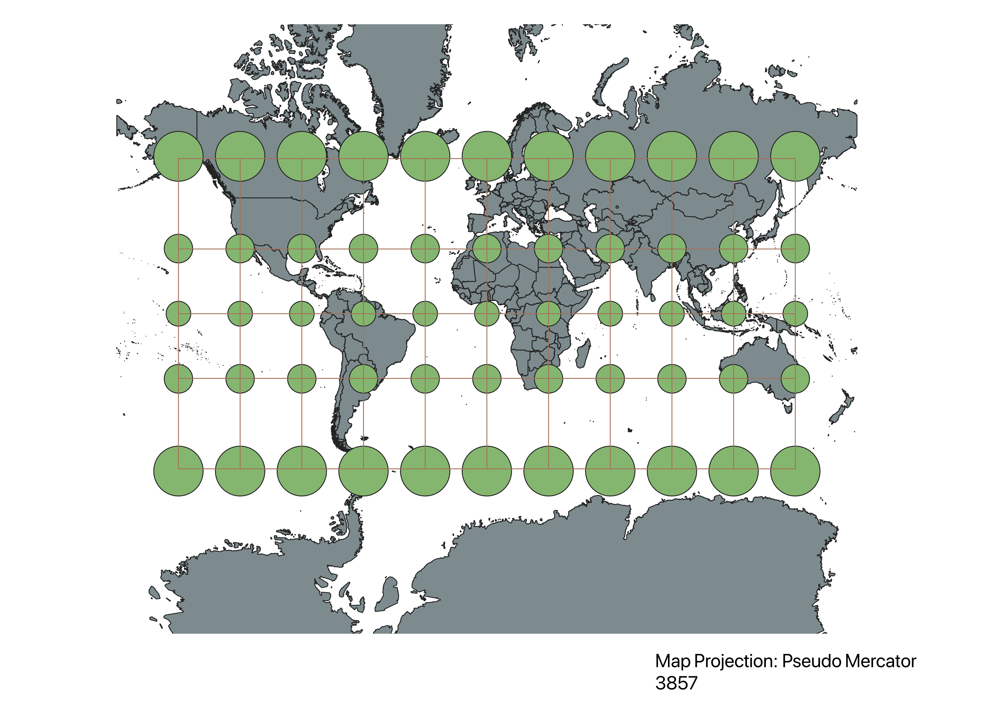
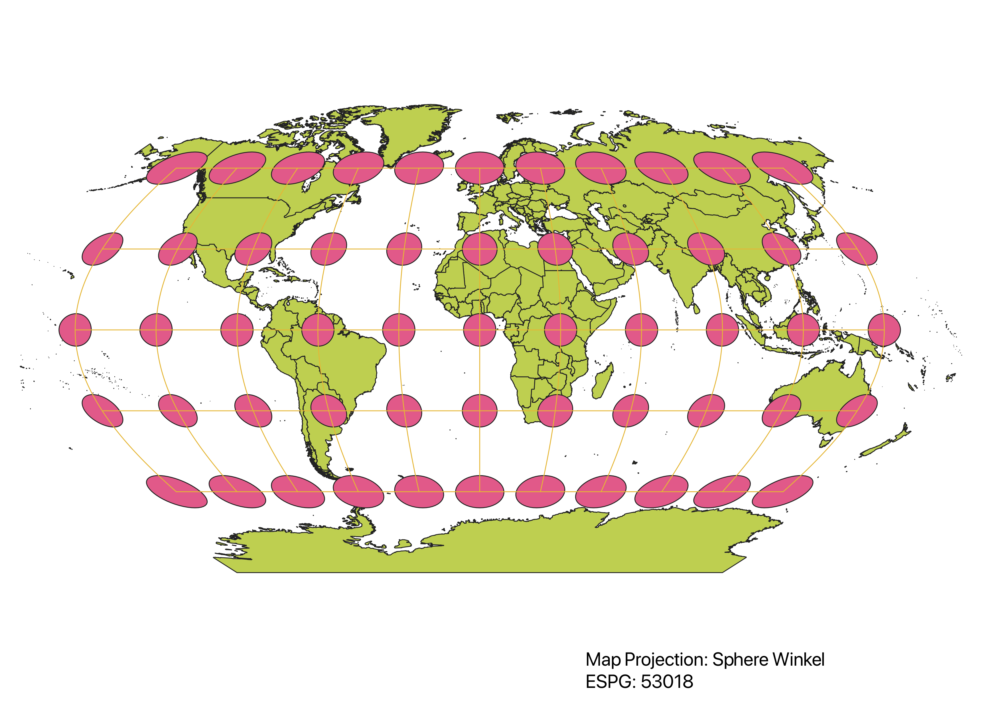
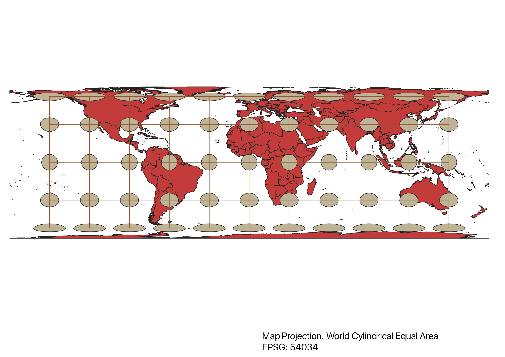
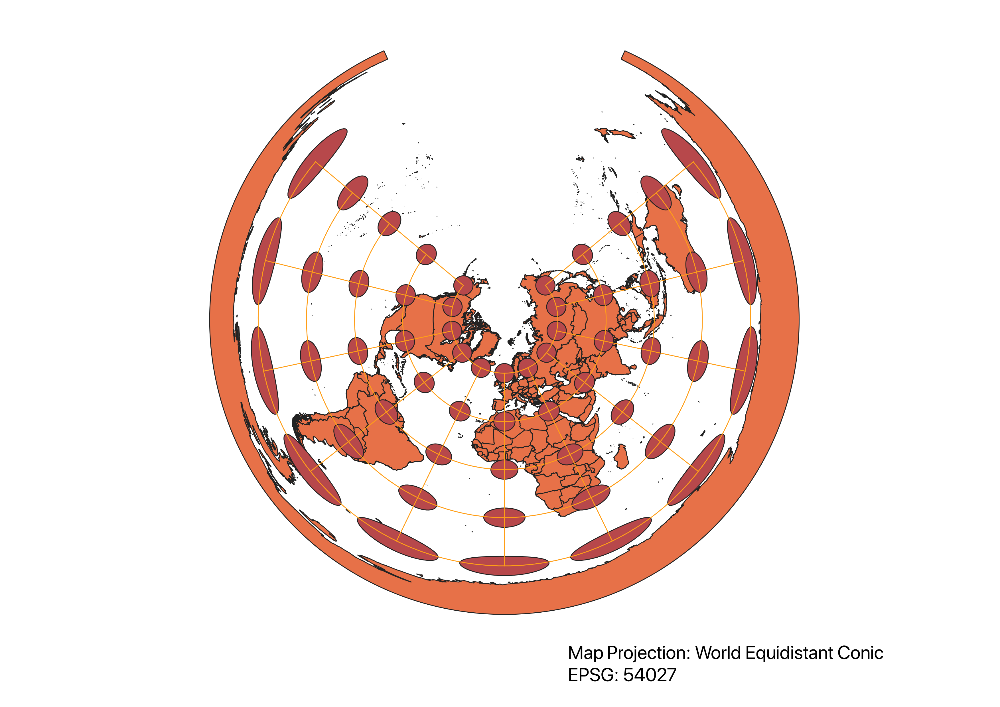
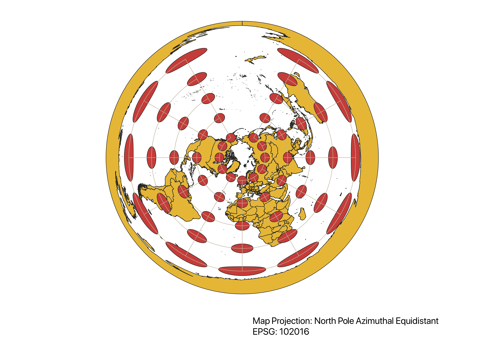
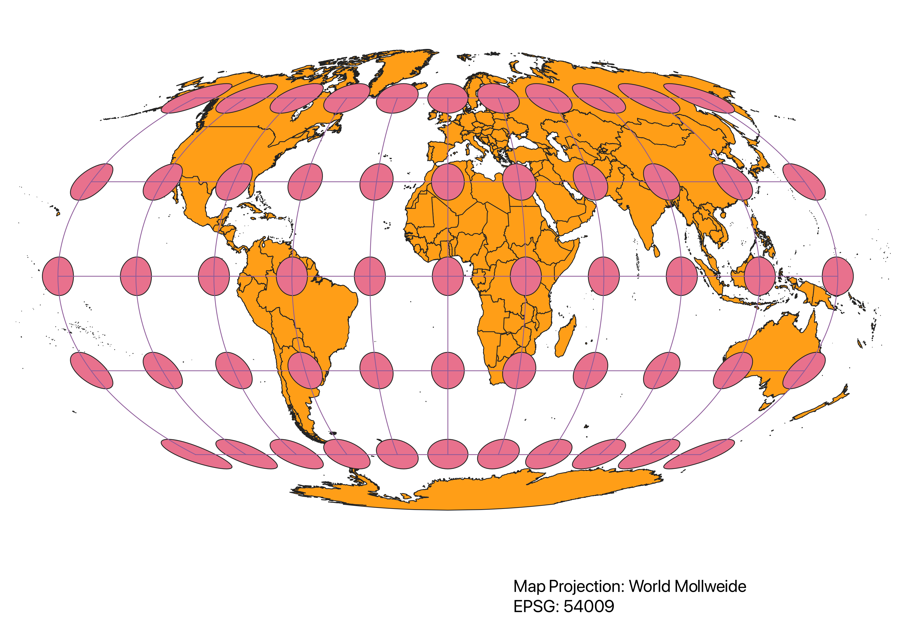
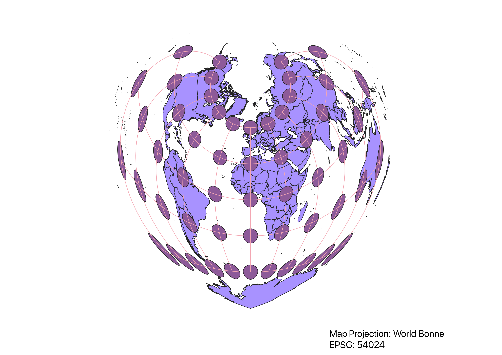

Homework 2: In this project I learned how to display images in different projections
The Natural Earth vector shape file was used as a base map for all projections. Then for each projection, different EPSG codes were found and applied to alter the base map to look like the projection it was displaying. The Indacatrix Mapper plug-in was used to apply the circles and lines that show the distortion the projection causes.
WGS84 Projection
The map seems to become more distorted as it gets further from the Equator, which can be seen in the distortion of the cicles at the North and South poles.

Aitoff Projection
The shapes of the continents are distorted in this projection, which likely means the distances are distorted as well.

Pseudo Mercator
The shapes of the continents are not distorted, but the sizes are. The circles close to the North and South poles are significantly larger than the ones closest to the Equator.

Sphere Winkel
The shapes and sizes of the continents are distorted, as can be seen by the distortion of the circles. All of the circles except the ones running along the Equator are distorted.

World Cylindrical Equal Area
The distances seem to be preserved in this projection, but the shapes and sizes are distorted, especially at the North and South poles.

World Equidistant Conic
The map is circular and slightly resembles a 2D globe, but shapes, distances, and sizes are more distorted with increasing distance from the North pole.

North Pole Azimuthal Equidistant
The projection is spherical and based around the North pole, where size and shape becomes increasingly distorted with increasing distance from the North Pole.

World Mollweide
All shapes, even those closest to the Equator, are slightly distorted. Size is most distorted along the North and South poles.

World Bonne
The shape of the projection is circular and almost pointed at the South pole. Size and shape are correct at the North pole, but become distorted when moving away. Distances are also greatly distorted.

Data used for this project
Download Natrual Earth 1:10m Cultural Vector